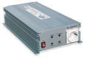
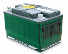
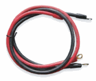
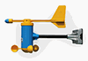
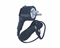
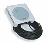

옵션 제품
설치 환경과 용도에 따라 선택할 수 있는 롤업스타 편리부품입니다.
CONVENIENCE PARTS
편리부품
비닐보호 튜브
개폐축 파이프 표면에 끼워 사용하는 보호 부품입니다.
- 개폐축과의 마찰로 인한 비닐 손상 감소
- 파이프에 끼우는 간편한 설치 방식
- 부품번호
- WSV-1522 · WSV-1525
- 적용
- Ø22 · Ø25 파이프용
- 재질
- EPDM · 경도 40도
설치 예시 보기 ↓비닐보호 고무바
비닐을 고정하는 패드에 끼워 사용하는 보호 부품입니다.
- 개폐축 마찰에 의한 비닐 손상 감소
- 연속된 고무바로 넓은 구간 보호
- 부품번호
- WSR-1522
- 재질
- EPDM · 경도 70도
- 포장
- 1롤 4m · 10롤 1박스
설치 예시 보기 ↓스테인리스 커플링
롤업스타와 개폐축 파이프를 연결하는 스테인리스 커플링입니다.
- 녹이 발생하지 않아 습한 환경에 유리
- 스테인리스 고정볼트 3개 포함
- 부품번호
- SC2216 · SC2516 · SC2816 · SC3216
- 적용
- Ø22 · Ø25.4 · Ø28 · Ø32
- 구성
- 커플링 1개 · 스테인리스 볼트 3개
- 재질
- 스테인리스 · 선반가공
정션박스
DC24V 전동개폐기의 전선 연결부를 보호합니다.
- 전선 연결 및 해체가 간편
- 클립 고정으로 연결부와 파이프를 안정적으로 보호
- 부품번호
- WJB-2425
- 재질
- ABS 수지
- 구성
- 정션박스 · 클립 3종 · 파이프 앤드
설치 예시 보기 ↓
SENSOR HOUSING · EMERGENCY POWER센서 보호 케이스 · 비상전원 공급장치
시설원예 환경센서를 보호하고 정전 시 개폐 시스템의 비상운전을 지원하는 우성하이텍 편리부품입니다.
자체 금형 제작온도·습도 센서 케이스
온도·습도 센서의 감지부를 외부 충격과 직접적인 복사열로부터 보호하면서 공기가 통과하도록 설계한 센서 커버입니다.
- 센서 설치 상태를 일정하게 유지
- 백색 ABS 재질로 복사열 영향 완화
- 모델
- THC-120
- 재질
- 백색 ABS 플라스틱
- 크기
- □70.5 × 120 mm
- 포장
- 2개 / 비닐 팩
자체 금형 제작온도·습도·CO₂ 센서 케이스
온도·습도와 CO₂ 센서를 함께 수용할 수 있는 원형 적층 구조의 센서 커버입니다.
- 복합 센서 감지부를 한 케이스에 구성
- 슬릿 구조로 주변 공기와 센서 접촉 지원
- 모델
- THC-160
- 재질
- 백색 ABS 플라스틱
- 크기
- Ø149 × 120 mm
- 포장
- 1개 / 카튼박스
자체 금형 제작실내 통합센서 케이스
복합환경센서를 수용하고 내부 팬으로 공기를 순환시켜 시설 내부 환경을 지속적으로 측정하도록 구성한 케이스입니다.
- 강제 공기순환으로 센서 주변 공기 정체 완화
- 먼지 유입 방지 필터 적용
- 모델
- THC-260
- 팬
- AC220V · 10W
- 크기
- Ø180 × 260 mm
- 포장
- 1개 / 카튼박스
정전 시 자동 전환비상전원 공급장치
평상시에는 배터리를 자동 충전하고, 정전 시 배터리의 DC12V를 AC220V로 변환하여 개폐 시스템에 자동으로 전원을 공급합니다.
- 정전 발생 시 별도 전환 조작 없이 비상전원 공급
- 환기창을 안전 위치로 운전할 시간을 확보
- 모델
- DAC-12220
- 변환
- DC12V → AC220V
- 최대용량
- 1.5 kW
- 구성
- 전원변환기 · 배터리 · 연결 케이블

전원변환기
배터리
연결 케이블사용 예80Ah 배터리 사용 시 DC24V 50W 전동개폐기 20대용 컨트롤러를 약 30분간 운전할 수 있습니다.실제 운전시간은 배터리 상태·충전량·연결 부하와 현장 조건에 따라 달라질 수 있습니다.
ENVIRONMENT MONITOR환경관리 모니터
풍향·풍속과 CO₂ 농도를 현장에서 바로 확인하고, 설정값에 도달하면 경보음과 릴레이 접점으로 외부 경보 회로에 신호를 전달하는 제품입니다.
WIND DIRECTION · SPEED풍향·풍속 경보 모니터
16방향의 풍향과 풍속을 표시하고 설정 풍속에 도달하면 현장 경보와 릴레이 접점 신호를 출력합니다.
- 강풍 상태를 현장에서 즉시 확인
- 센서 이상 시 화면 표시와 경보음 발생
- RS485 통신 지원
- 본체전압
- DC 5V
- 표시범위
- 풍향 16방향 · 풍속 0~70m/s
- 경보설정
- 풍속 0~55m/s · 1m/s 단위
- 경보지속
- OFF~90분 · 1분 단위
- 경보실행
- 경보음 · 릴레이 A접점
- 크기·전력
- 90×145×32mm · 약 5W
모니터
풍향·풍속 센서
전원 어댑터통신 케이블
CO₂ MONITOR · RELAY ALARMCO₂ 경보 모니터 WSCO-507
외부 CO₂ 센서의 측정값을 표시하고 설정한 상한 또는 하한 조건에서 경보와 릴레이 A접점 신호를 출력합니다.
- 상한·하한 경보 출력 선택
- AUX 접점으로 컨트롤러 입력과 연동 가능
- 센서 이상 경보 · RS485 통신 지원
- 본체전압
- DC 5V
- 표시범위
- 200~6000ppm
- 경보설정
- OFF 또는 1~6000ppm
- 경보지연
- OFF 또는 1~90분
- 경보출력
- 상한 또는 하한 · 릴레이 A접점
- 통신·전력
- RS485 · 약 5W
모니터
CO₂ 센서전원 어댑터통신 케이블 어댑터 입력 AC80~276V · 50/60Hz
접점 연동 경보 발생 시 AUX A접점이 닫힙니다. 접점 입력을 지원하는 컨트롤러에 연결하여 환기·팬·차단 등의 연동 신호로 활용할 수 있습니다.
STANDALONE CO₂ METER벽걸이형 CO₂ 미터
실내 CO₂ 농도를 자체 화면으로 확인하고 설정값보다 높아질 때 경보음과 릴레이 접점 신호를 출력하는 일체형 측정기입니다.
- 비분산 적외선 방식으로 CO₂ 측정
- 최고·최저 농도 기억
- 설정값 초과 시 경보음 발생
- 측정범위
- 0~6000ppm · 10ppm 단위
- 정밀도
- ±30ppm
- 측정방법
- 비분산 적외선 방식
- 경보출력
- 경보음 · 릴레이 A접점
- 제품크기
- 140×140×31mm
- 소비전력
- 약 5W
릴레이 출력 안내 WSCO-507 AUX 단자는 경보 발생 시 닫히는 A접점이며 허용 전류는 1A 이하입니다. 모터 등 고용량 부하는 직접 연결하지 말고 컨트롤러 또는 마그네틱 콘텍터를 사용하십시오.
FIELD EXAMPLES편리부품 현장 설치 예시
제품 사진과 함께 실제 설치 위치와 사용 형태를 확인할 수 있습니다.

비닐 보호비닐보호 튜브
개폐축 파이프에 튜브를 끼워 피복재와 맞닿는 부분을 보호합니다.

마찰 구간 보호비닐보호 고무바
개폐축이 지나가는 구간에서 비닐의 마찰과 손상을 줄여줍니다.

배선 연결부 보호정션박스
개폐기 전선 연결부를 정리하고 외부 환경으로부터 보호합니다.
GUIDE ROLLER가이드 롤러(비닐용)
가이드암을 설치할 공간이 확보되지 않는 장소에서 개폐기의 회전을 막고, 개폐축이 레일을 따라 안정적으로 이동하도록 안내합니다.
전용형 · 일반형 선택스테인리스 볼베어링 적용설치 레일 폭과 파이프 외경에 따라 선택

WNGR-2516FSB
Ø25 · 철(전착도장)레일 폭 2mm 이하 · 160mm

WNGR-2516SSB
Ø25 · 스테인리스레일 폭 2mm 이하 · 160mm

WGR-2514FSB
Ø25 · 철(아연도금)레일 폭 제한 없음 · 140mm

WGR-2514SSB
Ø25 · 스테인리스레일 폭 제한 없음 · 140mm

WGR-2814FSB
Ø28 · 철(아연도금)레일 폭 제한 없음 · 140mm

WGR-2814SSB
Ø28 · 스테인리스레일 폭 제한 없음 · 140mm
공통 사양 스테인리스 볼베어링 적용 · WNGR 제품 0.5kg, 그 외 제품 0.8kg
INSTALLATION EXAMPLES
가이드롤러 설치 예시
가이드롤러 종류에 따라 개폐기의 설치 방향과 연결 위치가 달라집니다.
전용 가이드롤러WNGR 시리즈
 세로 개폐축 설치
세로 개폐축 설치
개폐기 방향을 그대로 유지한 상태로 전용 가이드롤러에 결합합니다.
일반 가이드롤러WGR 시리즈
 가이드암 연결부 사용
가이드암 연결부 사용
가이드암 쪽 연결부를 사용하므로 개폐기 본체가 90° 돌아간 방향으로 설치됩니다.
사진은 대표 설치 예시입니다. 현장 구조와 개폐축 방향에 맞는 제품을 선택하십시오.